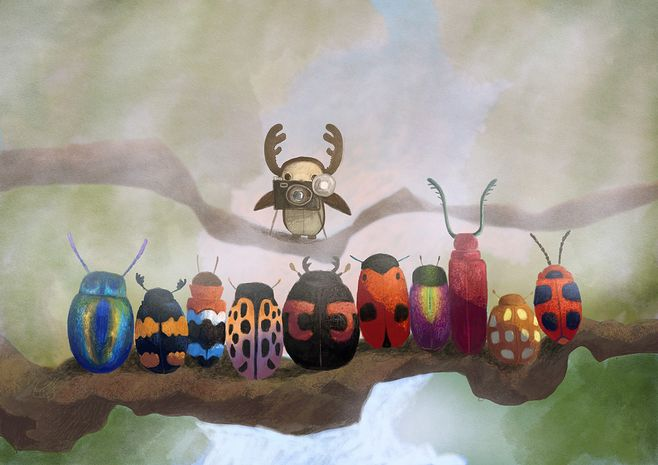
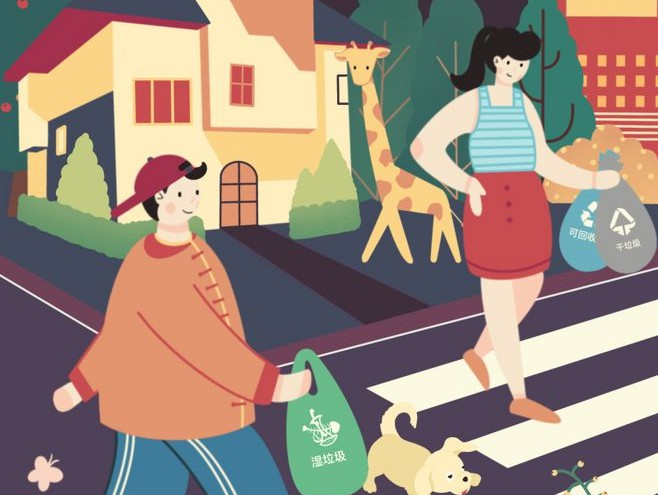

Overview of works created
School of Design vi Guide Design Including floor display map, first-level guidance and second -level guidance so do.
The yellow-orange color scheme symbolizes the vitality of the industrial societyAdhering to the concept of the union of man and nature in industrial design.
Aiming at the image characteristics of Nanjing Science and Technology Museum, we have made the web design rich in science and technology.
The yellow-orange color scheme symbolizes the vitality of the industrial societyAdhering to the concept of the union of man and nature in industrial design.
In the data design, we developed a volcano as the theme and analyzed the volcanic species.
In the chart we analyze the internal structure of the volcano to show it in a more intuitive way
Appreciation of outstanding works
|

|
|
|
Parent-child farm |
Spider science |
|
Release nature and get close to nature |
Focus on this part of spider webs, because this |
|
Wonder childlike, happy parent-child |
one is the child's most interested in the |
|
Innovative cultivation, education in agriculture |
investigation. Based on this, the child's own structure |
|
Creating a Custom Private Farm |
of the spider (how to weave the web) is introduced to form a complete system. |
|  |
Garbage campus system Reasonable allocation of campus trash cans Consumption of feedback garbage Responses to large groups |